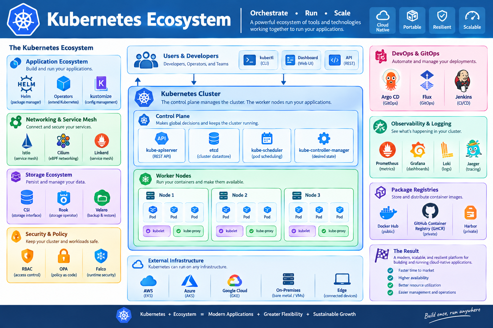
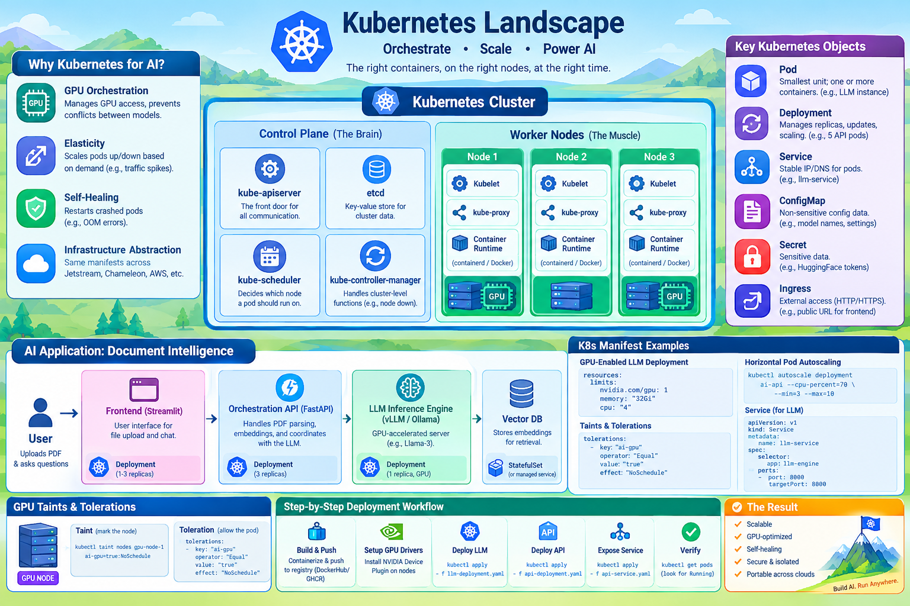

Kubernetes (K8s) for AI: Production-Grade Orchestration
This chapter explores Kubernetes, the industry-standard container orchestration platform, and how it is applied to deploy, scale, and manage complex AI workloads.
Local first
New to Kubernetes? Start with kubernetes-local.md to set up a sandbox on your laptop before deploying to production.
Learning Objectives
By the end of this chapter, students will be able to: 1. Explain the core architecture of Kubernetes and its role in the AI lifecycle. 2. Distinguish between key K8s objects: Pods, Deployments, Services, and ConfigMaps. 3. Design a production-ready architecture for an AI application. 4. Implement GPU-aware scheduling using resource limits, taints, and tolerations. 5. Deploy a multi-tier AI application using Kubernetes manifests.
1. Introduction to Kubernetes
While Docker provides the "container" (the package), Kubernetes (K8s) provides the "orchestra" (the management). In an AI context, you rarely run a single container. You typically have a pipeline: data ingestion $\rightarrow$ preprocessing $\rightarrow$ inference $\rightarrow$ frontend. Thes can be orchestrated with kubernetes.
The AI Lifecycle and Kubernetes
AI is not just about the model; it is a lifecycle. Kubernetes provides the glue for each stage:
- Data Engineering: Orchestrating Spark or Ray clusters to clean and preprocess terabytes of data.
- Training: Managing distributed training jobs (using operators like Kubeflow) that synchronize weights across dozens of GPUs.
- Inference (Deployment): Wrapping the trained model in a container (like vLLM) and scaling it based on real-time user requests.
- Monitoring: Tracking "model drift" and GPU health to decide when to trigger a re-train.
Why Kubernetes for AI?
AI workloads have unique requirements that make K8s useful:
- GPU Orchestration: K8s can manage which pods get access to which GPUs, preventing multiple models from crashing the same card.
- Elasticity: AI inference demand is spiky. K8s can scale the number of API pods up or down based on traffic.
- Self-Healing: If an LLM process crashes due to an Out-of-Memory (OOM) error, K8s automatically restarts the pod.
- Infrastructure Abstraction: Whether running on Jetstream, Chameleon, or AWS, the K8s manifests remain mostly the same.
{kind=link}


{kind=link}
2. Kubernetes Core Architecture
Kubernetes operates on a Cluster model consisting of a Control Plane and one or more Worker Nodes. This decoupled architecture ensures that the management of the cluster is separated from the execution of workloads, allowing the system to be highly scalable and resilient to individual node failures.
For AI workloads, two components of this architecture are particularly critical:
2.1 The Control Plane (The Brain)
- etcd: The \"source of truth.\" It is a distributed key-value store that ensures that even if the API server crashes, the state of the cluster (which pods are running where) is never lost. It uses the Raft consensus algorithm to ensure consistency.
- kube-scheduler: For AI, the scheduler is critical. It performs Bin-Packing, attempting to fit as many pods as possible onto a node to maximize GPU utilization, or Spreading, to ensure that if one GPU node fails, the entire AI service doesn't go offline.
The Control Plane makes global decisions about the cluster and detects/responds to cluster events.
- kube-apiserver: The "front door." All communication (from users or nodes) goes through here.
- etcd: A consistent and highly-available key-value store used as the backing store for all cluster data.
- kube-scheduler: Decides which node a new pod should run on, considering resource requirements (e.g., "this pod needs 1 GPU").
- kube-controller-manager: Handles cluster-level functions, like noticing when a node goes down and replacing the pods that were on it.
2.2 Worker Nodes (The Muscle)
Worker nodes are the underlying compute machines—physical servers or virtual machines—where your actual workloads and applications run. While the control plane makes the global decisions, the worker nodes execute them.
Every worker node runs three essential components required to host and manage pods:
Kubelet(The Node Agent): The primary agent running on each worker node. It receives pod specifications from the control plane (kube-apiserver) and ensures that the specified containers are actively running, healthy, and meeting resource requirements.kube-proxy(The Network Router): Maintains network rules on the host node. It handles low-level packet forwarding and IP routing, enabling network communication between pods, across nodes, and to external clients.Container Runtime(The Execution Engine): The underlying software layer responsible for pulling container images from registries, setting up isolated namespaces/cgroups, and running the actual containers (common runtimes includecontainerdandCRI-O).
3. Key Kubernetes Concepts
| Object | Description | AI Use Case |
|---|---|---|
| Pod | The smallest deployable unit; contains one or more containers. | A single LLM instance. |
| Deployment | Manages a set of identical pods; handles updates and scaling. | Scaling the FastAPI backend to 5 replicas. |
| Service | An abstract way to expose an application running on a set of pods. | A stable IP address to call the LLM API. |
| ConfigMap | Stores non-confidential configuration data. | Model names, temperature settings, API endpoints. |
| Secret | Stores sensitive data (passwords, tokens). | HuggingFace API keys, Database passwords. |
| Ingress | Manages external access to services (usually HTTP). | The public URL for the AI Frontend. |
4. Compelling AI Example: "AI-Powered Document Intelligence"
To understand "Real-World" Kubernetes, let's design a Document Intelligence System. This system allows users to upload a PDF, indexes it into a vector database, and enables users to ask questions about the document using a Large Language Model (LLM).
4.1 The AI Inference Pipeline: Data Flow
Before looking at the manifests, let's trace a single user request through the system:
- Request: The user uploads a PDF via the Streamlit Frontend.
- Coordination: The frontend sends the file to the FastAPI Orchestrator.
- Embedding: The Orchestrator breaks the PDF into chunks and sends them to an embedding model.
- Retrieval: The embeddings are stored in a Vector Database. When the user asks a question, the system retrieves the most relevant chunks.
- Generation: The retrieved chunks plus the user's question are sent to the LLM Engine (vLLM).
- Response: The LLM generates the answer, which flows back through the API $\rightarrow$ Frontend $\rightarrow$ User.
4.2 Data Persistence (PV & PVC) for Model Weights
In AI workloads, the most critical assets are the Model Weights—billions of numerical parameters (tensors) stored in formats like .safetensors or PyTorch .bin files.
In a production environment, these weights are rarely stored inside the container image because AI models are massive (several gigabytes), making images too slow to pull or rebuild. Instead, they are mirrored to a shared network file system (such as NFS, Azure Files, or Google Filestore).
Note
Understand the difference between where the models are soroed and when they are used in the GPU during runtime.
We use PersistentVolumes (PV) and PersistentVolumeClaims (PVC) to mount these shared weights across pods:
apiVersion: v1
kind: PersistentVolumeClaim
metadata:
name: model-weights-pvc
spec:
accessModes:
- ReadMany # Multiple GPU pods can read the weights simultaneously
resources:
requests:
storage: 50Gi
4.3 Kubernetes Manifest Design
A. The LLM Engine (GPU-Dependent Deployment)
Because the LLM requires hardware acceleration, we must specify GPU resource limits:
apiVersion: apps/v1
kind: Deployment
metadata:
name: llm-engine
spec:
replicas: 1
selector:
matchLabels:
app: llm-engine
template:
metadata:
labels:
app: llm-engine
spec:
containers:
- name: vllm-container
image: vllm/vllm-openai:latest
resources:
limits:
nvidia.com/gpu: 1 # Request 1 GPU
memory: "32Gi"
cpu: "4"
volumeMounts:
- name: model-storage
mountPath: /models
ports:
- containerPort: 8000
args: ["--model", "meta-llama/Meta-Llama-3-8B"]
volumes:
- name: model-storage
persistentVolumeClaim:
claimName: model-weights-pvc
B. The Orchestration API (CPU-Based Deployment)
The API layer is lightweight and can be scaled horizontally:
apiVersion: apps/v1
kind: Deployment
metadata:
name: ai-api
spec:
replicas: 3 # Scale to 3 for high availability
selector:
matchLabels:
app: ai-api
template:
metadata:
labels:
app: ai-api
spec:
containers:
- name: fastapi-container
image: my-ai-api:v1.0
env:
- name: LLM_ENDPOINT
value: "http://llm-service:8000"
ports:
- containerPort: 80
C. Internal Networking (Services)
A Kubernetes Service provides a stable internal network endpoint so the API can reliably discover the LLM engine:
apiVersion: v1
kind: Service
metadata:
name: llm-service
spec:
selector:
app: llm-engine
ports:
- protocol: TCP
port: 8000
targetPort: 8000
D. Public Access (Ingress)
An Ingress Controller (such as Nginx) manages external traffic entry points, routing paths and handling SSL termination:
apiVersion: networking.k8s.io/v1
kind: Ingress
metadata:
name: ai-app-ingress
annotations:
nginx.ingress.kubernetes.io/rewrite-target: /
spec:
rules:
- host: ai.example.com
http:
paths:
- path: /chat
pathType: Prefix
backend:
service:
name: ai-api-service
port:
number: 80
- path: /
pathType: Prefix
backend:
service:
name: ai-frontend-service
port:
number: 8501
Pro Tip: Custom Metrics Scaling Scaling solely by CPU can be misleading for AI applications where GPUs operate at 100% capacity while CPUs idle. Advanced architectures use KEDA (Kubernetes Event-driven Autoscaling) to scale pods based on GPU VRAM utilization or active request queue lengths.
5. Advanced K8s for AI: Ensuring Stability
5.1 Taints and Tolerations
To prevent general-purpose workloads (like standard web servers) from occupying expensive GPU nodes, we use taints and tolerations:
- Taint: Marks a node so that ordinary pods cannot land on it unless explicitly allowed.
-
Example command:
kubectl taint nodes gpu-node-1 ai-gpu=true:NoSchedule -
Toleration: Attached to the LLM pod specification, giving it permission to run on tainted GPU nodes.
5.2 Resource Quotas and LimitRanges
In a shared cluster environment (such as a university research lab), resource governance prevents a single user from starving others:
- ResourceQuotas: Sets hard limits on total resources consumed within a specific namespace (e.g., limiting a student project to a maximum of 2 GPUs total).
- LimitRanges: Defines default and maximum constraints for individual pods (e.g., capping a single pod's VRAM request).
5.3 Horizontal Pod Autoscaling (HPA)
When API traffic spikes, Kubernetes can automatically adjust pod counts to maintain performance:
6. Step-by-Step Deployment Workflow
Deploying this AI architecture involves the following sequence:
- Build and Push: Containerize the FastAPI and Streamlit apps and push images to a container registry.
- Setup GPU Drivers: Ensure worker nodes have the NVIDIA Device Plugin installed.
- Deploy LLM: Run
kubectl apply -f llm-deployment.yamland wait for the model weights to load into VRAM. - Deploy API: Run
kubectl apply -f api-deployment.yaml. - Expose Service: Run
kubectl apply -f api-service.yaml. - Verify: Run
kubectl get podsto confirm all components show aRunningstatus.
7. AI Observability: Monitoring the Engine
Knowing a pod is "Running" is insufficient for resource-heavy AI inference engines prone to thermal throttling, out-of-memory errors, or GPU fragmentation.
7.1 The Monitoring Stack
- Prometheus: Periodically scrapes metrics from pods and stores them in a time-series database.
- Grafana: Visualizes Prometheus metrics on custom dashboards.
7.2 GPU Metrics
Installing the NVIDIA Device Plugin and DCGM Exporter allows you to monitor critical hardware indicators:
- GPU Utilization: Computes actual active processing power.
- VRAM Usage: Detects memory overflows before out-of-memory crashes occur.
- Temperature & Power: Tracks thermal throttling risks under sustained load.
7.3 Log Aggregation (The EFK/Loki Stack)
Python tracebacks and CUDA errors can be lost upon pod restarts. Production clusters aggregate logs using:
- Fluentd / Promtail: Collect container log streams.
- Elasticsearch / Loki: Index logs for fast searching.
- Kibana / Grafana: Provide a unified UI to inspect logs across multiple pods simultaneously.
Self-Assessment
Self-Assessment
Test your knowledge by expanding the questions below.
What is the primary difference between a Pod and a Deployment?
A Pod is a single instance of a running container (or group of containers), whereas a Deployment is a manager that ensures a specified number of Pod replicas are running and handles rolling updates.
How does Kubernetes handle GPU requests for AI models?
Kubernetes uses resource limits (resources.limits) specifically for nvidia.com/gpu. The scheduler then finds a node with an available GPU to place the pod.
What is the purpose of a Kubernetes Service in the AI Document Intelligence example?
The llm-service provides a stable DNS name (http://llm-service) that the API pods can use to communicate with the LLM engine, regardless of which node the LLM pod is actually running on or how its IP changes.
Why are Taints and Tolerations important in a mixed-resource cluster?
They prevent general-purpose pods (which don't need GPUs) from occupying space on expensive GPU nodes, reserving those resources exclusively for AI models.
How would you handle a scenario where the LLM engine requires a secret HuggingFace token?
Create a Kubernetes Secret (kubectl create secret generic hf-token --from-literal=token=xxx) and inject it into the LLM pod as an environment variable.
Appendix: Manifest
In Kubernetes, a manifest is a specification of a desired state for a Kubernetes object, written in YAML or JSON.
Think of it as a declarative blueprint or contract that you hand over to the Kubernetes control plane. It tells Kubernetes what you want the final system to look like (e.g., "Run 3 replicas of this Nginx container with port 80 open"), rather than giving it an imperative step-by-step script on how to build it.
Key Characteristics of a Manifest:
- Declarative: You define the goal state, and Kubernetes continuously works behind the scenes to make sure the cluster matches that state.
- Version-Controlled: Because they are plain text files, manifests are typically stored in Git repositories, enabling GitOps, code reviews, and history tracking.
- Idempotent: Applying the same manifest multiple times results in the same cluster state; if the cluster already matches the manifest, Kubernetes makes no changes.
1. Internal Structure of a Single YAML File
Every Kubernetes manifest follows a standard structure defined by the Kubernetes API. A single file can also contain multiple resources separated by three dashes (---).
A standard manifest is broken down into four main top-level fields:
apiVersion: The version of the Kubernetes API you are using to create the object (e.g.,apps/v1for Deployments,v1for Pods or Services).kind: The type of Kubernetes object you want to create (e.g.,Deployment,Service,ConfigMap,Namespace).metadata: Data that helps uniquely identify the object, including aname,namespace, andlabelsorannotations.spec: The core configuration where you define the desired state for that object (e.g., container images, port numbers, replica counts).
Example of a single manifest:
apiVersion: apps/v1
kind: Deployment
metadata:
name: my-web-app
namespace: production
spec:
replicas: 3
selector:
matchLabels:
app: web
template:
metadata:
labels:
app: web
spec:
containers:
- name: nginx
image: nginx:latest
GGGGGGGGGGGG
Here is the improved, professionally structured version of your guide. The text has been reorganized to fix structural flow issues (such as misplaced sections and code snippets), enhance readability, and establish a clear, logical hierarchy from architecture to deployment and observability.
Self-Assessment
Self-Assessment
Test your knowledge by expanding the questions below.
What is the primary difference between a Pod and a Deployment?
A Pod is a single instance of a running container, whereas a Deployment is a controller that manages pod replicas, rolling updates, and self-healing.
How does Kubernetes handle GPU requests for AI models?
Kubernetes uses resource limits (resources.limits: [nvidia.com/gpu](https://nvidia.com/gpu)) so the scheduler can place pods onto nodes equipped with available hardware accelerators.
What is the purpose of a Kubernetes Service in the AI Document Intelligence example?
The llm-service provides a stable internal DNS name (http://llm-service) that API pods use to communicate with the LLM engine regardless of pod rescheduling or IP changes.
Why are Taints and Tolerations important in a mixed-resource cluster?
They reserve expensive GPU nodes exclusively for heavy AI models, preventing lightweight web components from consuming specialized hardware.
How would you handle a scenario where the LLM engine requires a secret HuggingFace token?
Create a Kubernetes Secret (kubectl create secret generic hf-token --from-literal=token=xxx) and securely inject it into the LLM pod as an environment variable or volume mount.
Appendix: Kubernetes Manifest Basics
In Kubernetes, a manifest is a declarative specification of a desired state written in YAML or JSON.
Key Characteristics:
- Declarative: You define the goal state, and Kubernetes continuously converges the cluster toward it.
- Version-Controlled: Plain text files stored in Git repositories enable GitOps and code reviews.
- Idempotent: Applying the same manifest multiple times yields identical cluster states without redundant alterations.
Structure of a Manifest File
A standard manifest relies on four core top-level fields:
apiVersion: The target Kubernetes API version (e.g.,apps/v1).kind: The type of object being created (e.g.,Deployment,Service).metadata: Identifiers likename,namespace, andlabels.spec: The core configuration defining the desired operational state.
Appendix: Project Directory Organization (Best Practices)
When managing dozens or hundreds of YAML files for an application across different environments, teams usually adopt one of three common organizational patterns:
-
By Component/Service (Monorepo Style): Files are grouped based on the microservice or application component they belong to.
-
Using Kustomize (Environment Overlays): A native Kubernetes tool that lets you define a base configuration and apply patches/overlays for different environments (
dev,staging,prod) without duplicating code. -
Using Helm Charts: If you need to template your YAML files to deploy across various clusters with dynamic values, you package them into a Helm Chart structure.
Appendix - Academia may not use kubernetes for AI services
The divergence between SLURM (Simple Linux Utility for Resource Management) and Kubernetes in academic and national research centers comes down to a fundamental clash of paradigms: Batch-oriented High-Performance Computing (HPC) versus Cloud-native Service Orchestration.
While Kubernetes dominates commercial cloud infrastructure and modern AI serving pipelines, academic centers heavily rely on SLURM for several architectural and historical reasons:
1. The Queueing vs. "Always-On" Model
- SLURM (Batch Queue): HPC resources are scarce and expensive. SLURM operates on a strict queueing and allocation model with fair-share policies and backfill scheduling. A researcher submits a script requesting 128 nodes for 24 hours. Once the time limit expires, the job terminates, and resources are reclaimed for the next user.
- Kubernetes (Stateful Services): Kubernetes assumes workloads are long-running services (APIs, databases, web apps) that should stay up indefinitely until explicitly updated or deleted. While K8s can run batch jobs via
JobsorCronJobs, managing complex scheduling queues, priority preemption, and wall-time limits natively has historically required external batch controllers.
2. High-Performance Interconnects and Bare-Metal Speed
- HPC (InfiniBand & MPI): Traditional scientific simulations (weather modeling, molecular dynamics, physics) rely heavily on Message Passing Interface (MPI) running across thousands of tightly coupled nodes. SLURM launches these processes directly on bare-metal hardware connected via ultra-low-latency, high-bandwidth interconnects like InfiniBand or Omni-Path.
- Kubernetes Network Overhead: Kubernetes historically introduced network virtualization layers (Container Network Interfaces / CNIs like Calico or Flannel) and overlay IPs. While modern HPC-K8s setups use SR-IOV, HostNetwork modes, and RDMA plugins to bypass this, tuning a K8s network to match bare-metal MPI performance remains significantly more complex than standard SLURM deployments.
3. Multi-Tenancy and Resource Contention
- SLURM: Designed from the ground up for aggressive multi-tenancy where hundreds of researchers share a cluster without stepping on each other's toes. Its accounting and limits framework strictly enforces CPU, memory, and GPU quotas per project or user.
- Kubernetes: While Kubernetes has namespaces and resource quotas, its multi-tenancy model is historically tailored to organizational teams sharing a microservices application stack, rather than hundreds of independent academic researchers executing arbitrary, unverified code concurrently.
4. Legacy Scientific Software Ecosystem
Decades of scientific software—written in Fortran, C, and C++—are built specifically to interact with cluster resource managers via environment variables (SLURM_JOB_ID, SLURM_NODEID) and launcher commands (srun, mpirun). Rewiring or containerizing these monolithic pipelines just to run on a different scheduler offers little scientific ROI for a research lab.
5. The Modern Shift: Hybrid Environments
Many academic and national labs are no longer choosing either/or, but rather adopting a hybrid approach:
- SLURM remains the backbone for massive, tightly coupled numerical simulations and traditional MPI workloads.
- Kubernetes (often leveraging tools like Apptainer instead of Docker for rootless container security) is increasingly deployed alongside SLURM specifically for AI model training, workflow engines (like Argo), and serving interactive inference APIs.